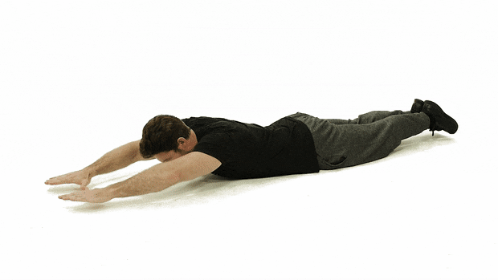

Spartans U16 Home Workout
Intro
Football ist ein physischer Sport, der mit deinem Körper gespielt wird. Damit dein Körper ideal auf das Spiel vorbereitet ist, musst du auch neben den zwei Trainingseinheiten arbeiten. Dafür sind diese drei einfachen Übungen. Ziel ist es, an drei trainingsfreien Tagen diese Übungen durchzuführen. Dafür wiederholst du jede Übung 20 mal. Dann hast du einen Satz der Übung geschafft. Das Training ist abgeschlossen, wenn du drei Sätze geschafft hast.
Übung 1: Push ups
Startposition/Ausgangsposition:
- Für eine sauber ausgeführte Liegestütze kniest du dich als erstes auf den Boden. Die Hände werden etwa schulterbreit auf dem Boden platziert. Die Finger zeigen nach vorne.
- Die Füße werden nacheinander nach hinten ausgestreckt und aufgestellt. Je enger die Füße nebeneinander stehen, desto besser kannst du Spannung in Rücken und Gesäß aufbauen.
- Überprüfe die Haltung deines Oberkörpers. Hände und Brustkorb sollten eine Linie bilden. Die Arme stehen senkrecht. Sollte dies nicht der Fall sein, schiebe deinen Oberkörper etwas nach vorne.
- Der Körper sollte während der ganzen Übungsausführung eine gerade Linie bilden. Setze deinen ganzen Körper unter Spannung und halte diese. Insbesondere Bauch, Rücken und Gesäß!
Übungsausführung:
- Beuge langsam deine Arme, ziehe dabei die Schultern zurück und führe die Brust kontrolliert Richtung Boden. Die Ellenbogen zeigen leicht schräg nach hinten.
- Atme während der Bewegung nach unten ein.
- Kopf in Verlängerung der Wirbelsäule
- Gehe so tief, wie du die Spannung in deinem Körper halten kannst.
- Drücke dich am tiefsten Punkt kontrolliert nach oben
- Atme dabei aus.
Variationen:
Diamond-Push ups:

Übung 2: Squats
Startposition/Ausgangsposition:
- Stell dich so hin, wie es sich für dich am besten anfühlt. Manchmal hilft es, wenn deine Zehen etwas nach außen zeigen, ansonsten stell deine Füße einfach parallel zueinander. Bist du dir nicht sicher, was am besten für dich ist, stell deine Füße anfangs schulterbreit auseinander und achte darauf, dass deine Zehen in einem 15-Grad-Winkel nach außen zeigen.
- Spann deine Bauchmuskeln an.
- Richte deinen Blick gerade nach vorne und steh aufrecht!
Übungsausführung:
- Senke deinen Hintern langsam, als wenn du dich hinsetzen wollen würdest
- Halte die Position
- Richte dich zügig auf
Variation:
Squat-Jump:
Übung 3: Reverse Snow Angel

Startposition/Ausgangsposition:
- Auf den Bauch legen
- Arme und Beine sind ausgestreckt
- Gesicht zeigt nach unten
- Bauchmuskeln anspannen
- Arme und Beine anheben, wobei der Blick weiterhin auf den Boden gerichtet ist
Übungsausführung:
- Arme gehen seitlich nach hinten, wie bei einem Schnee-Engel
- Kurz halten
- Arme gehen seitlich nach vorne